6. Selección de Modelos Lineales y Regularización
Resumen
En este capítulo exploramos métodos para mejorar la regresión lineal. La regresión por mínimos cuadrados a menudo funciona bien, pero no siempre. Existen alternativas que pueden mejorar la precisión de predicción y la interpretabilidad. Estudiamos tres clases de métodos: selección de subconjuntos, regularización (ridge y lasso) y reducción de dimensionalidad (PCR y PLS). También discutimos los desafíos de trabajar con datos de alta dimensión.
Selección de Subconjuntos
Selección del Mejor Subconjunto
La selección del mejor subconjunto (best subset selection) consiste en ajustar modelos de regresión con todos los \(2^p\) subconjuntos posibles de \(p\) predictores y seleccionar el mejor según algún criterio. La Figura 1 muestra la RSS para todos los modelos posibles en el conjunto de datos Credit, ordenados por tamaño.
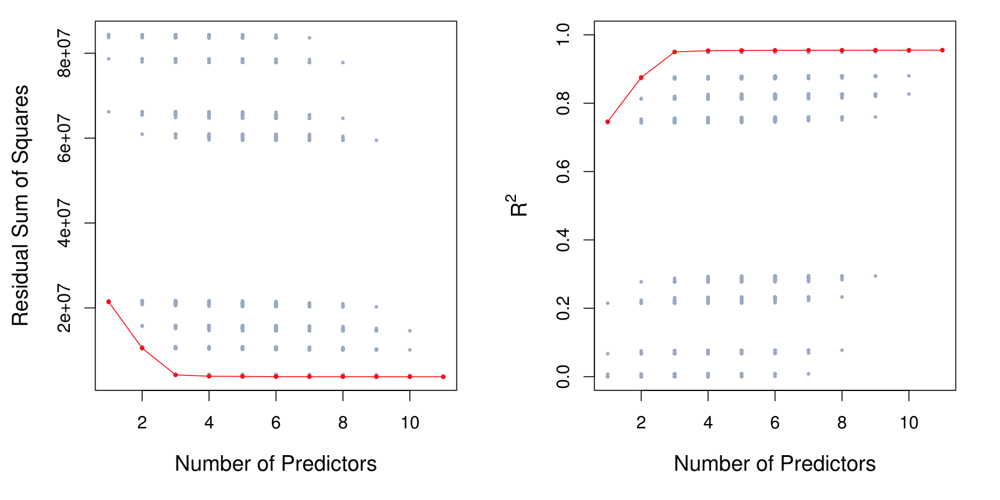
La Figura 2 muestra los coeficientes estimados para los mejores modelos de cada tamaño, ilustrando qué predictores son seleccionados en cada caso.
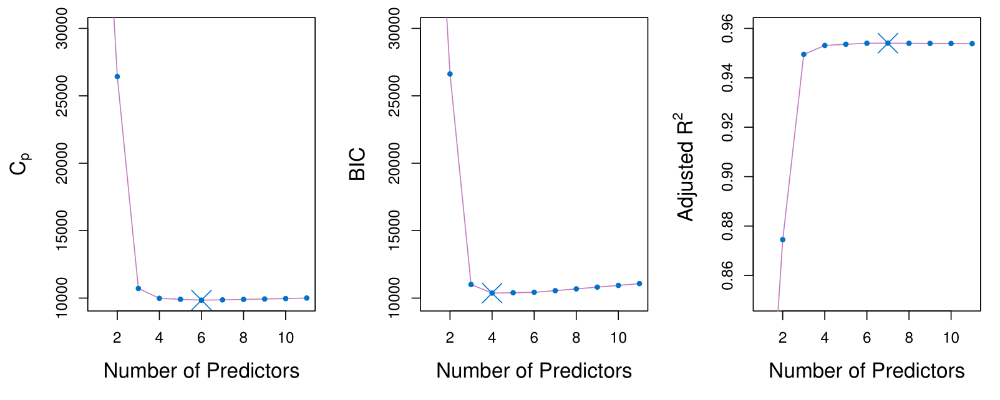
Selección Paso a Paso
La selección del mejor subconjunto es computacionalmente inviable para \(p\) grande. Alternativas más eficientes son:
- Selección hacia adelante (forward selection): comienza sin predictores y los agrega de a uno.
- Selección hacia atrás (backward selection): comienza con todos los predictores y los elimina de a uno.
- Selección paso a paso mixta (mixed selection): combina ambas estrategias.
Elección del Modelo Óptimo
Para seleccionar entre modelos de diferentes tamaños, usamos criterios como:
- \(C_p\) (Mallows): estima el error de prueba.
- AIC (Akaike Information Criterion): similar a \(C_p\).
- BIC (Bayesian Information Criterion): penaliza más la complejidad.
- \(R^2\) ajustado: versión penalizada del \(R^2\).
- Validación cruzada: estimación directa del error de prueba.
La Figura 3 compara \(C_p\), BIC y \(R^2\) ajustado para la selección de subconjuntos en los datos Credit.
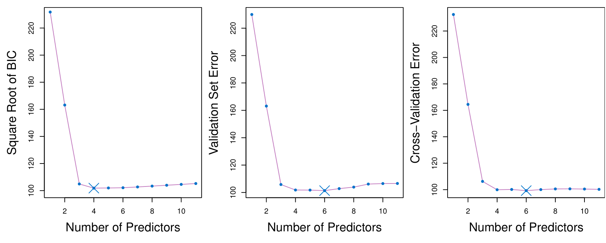
La Figura 4 compara la selección hacia adelante, hacia atrás y el mejor subconjunto.
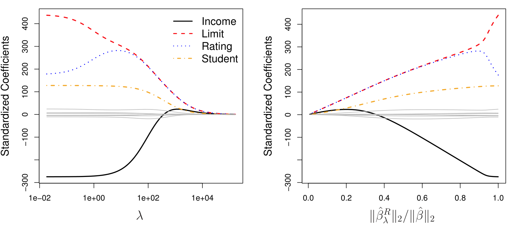
Métodos de Regularización (Shrinkage)
La regularización consiste en restringir los coeficientes de regresión para reducir la varianza a costa de un pequeño sesgo.
Regresión Ridge
La regresión ridge minimiza una RSS penalizada:
\[\sum_{i=1}^{n} (y_i - \beta_0 - \sum_{j=1}^{p} \beta_j x_{ij})^2 + \lambda \sum_{j=1}^{p} \beta_j^2\]
El término \(\lambda \sum \beta_j^2\) es la penalización \(L_2\) (o penalización de la norma al cuadrado). Cuando \(\lambda = 0\), ridge equivale a mínimos cuadrados; cuando \(\lambda \to \infty\), los coeficientes tienden a cero.
La Figura 5 muestra los coeficientes de la regresión ridge en función de \(\lambda\) para los datos Credit.
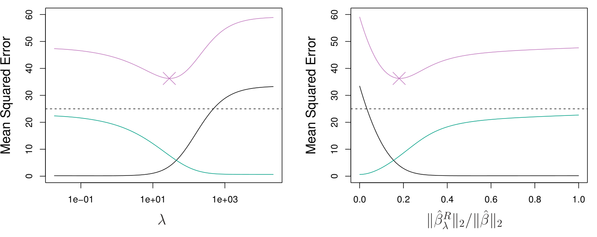
La elección de \(\lambda\) es crítica. La Figura 6 muestra la validación cruzada para seleccionar \(\lambda\) óptimo.
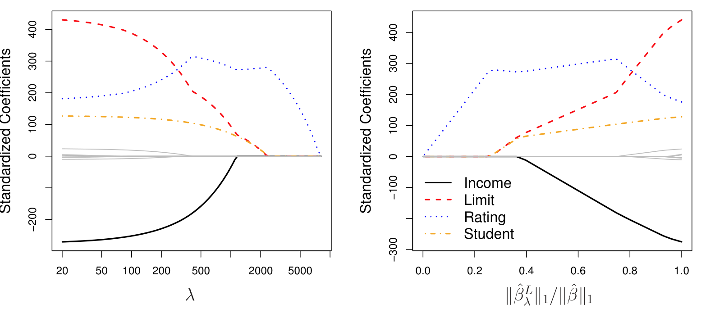
El Lasso
El lasso (Least Absolute Shrinkage and Selection Operator) usa una penalización \(L_1\):
\[\sum_{i=1}^{n} (y_i - \beta_0 - \sum_{j=1}^{p} \beta_j x_{ij})^2 + \lambda \sum_{j=1}^{p} |\beta_j|\]
A diferencia de ridge, el lasso puede llevar algunos coeficientes exactamente a cero, realizando así selección de variables. La Figura 7 muestra los coeficientes del lasso en función de \(\lambda\) para los datos Credit.
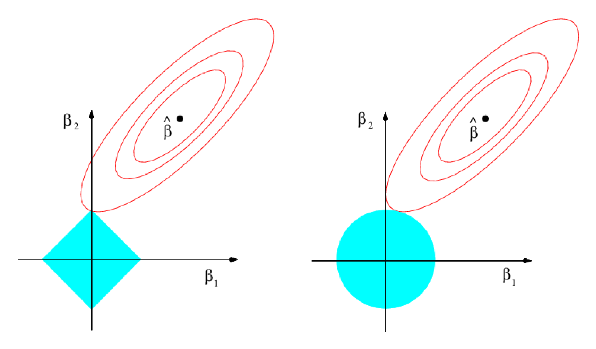
La Figura 8 muestra la validación cruzada para seleccionar \(\lambda\) en el lasso.
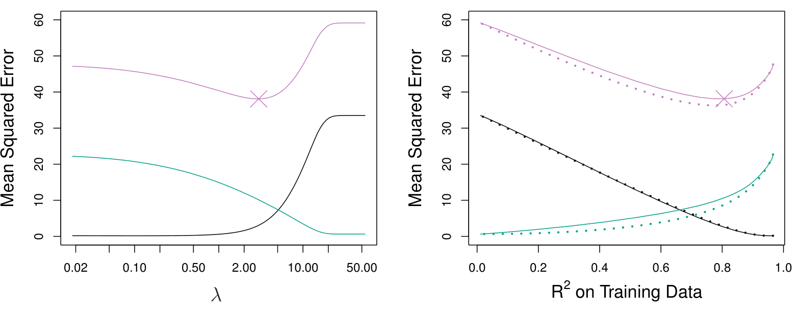
La Figura 9 compara las regiones de restricción de ridge (círculo) y lasso (diamante), ilustrando por qué el lasso produce coeficientes exactamente cero.
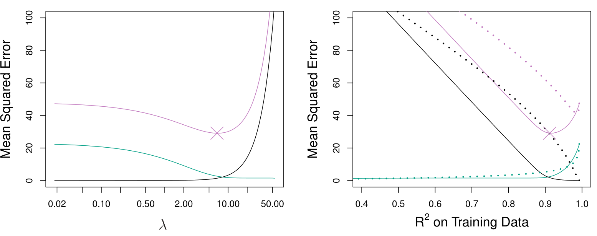
La Figura 10 y Figura 11 comparan el rendimiento de ridge y lasso en diferentes escenarios simulados, mostrando el ECM de prueba.
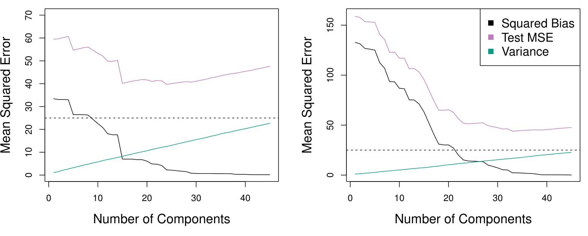
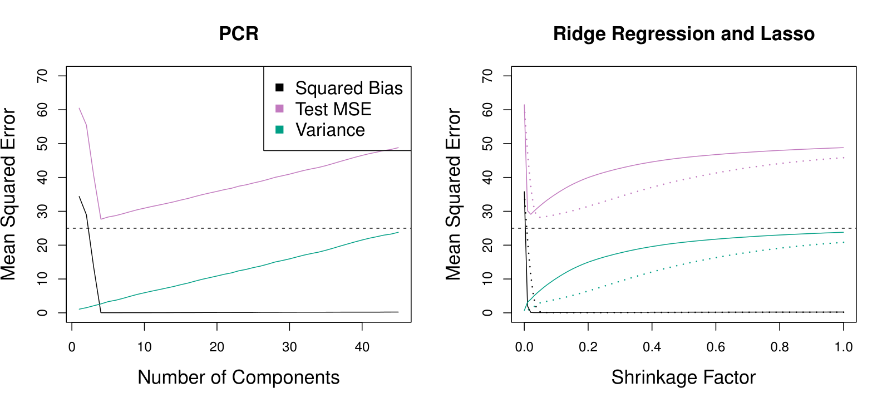
Selección del Parámetro de Ajuste
El parámetro \(\lambda\) se selecciona típicamente mediante validación cruzada. También se puede usar el criterio de información de Akaike (AIC) o BIC para el lasso.
Métodos de Reducción de Dimensionalidad
Los métodos de reducción de dimensionalidad transforman los \(p\) predictores originales en \(M < p\) combinaciones lineales, y luego usan estas \(M\) variables en la regresión.
Regresión por Componentes Principales (PCR)
La regresión por componentes principales (Principal Components Regression, PCR) usa los primeros \(M\) componentes principales como predictores. Las componentes principales son combinaciones lineales de los predictores originales que capturan la máxima varianza en \(X\).
La Figura 12 muestra los coeficientes de PCR en función del número de componentes.
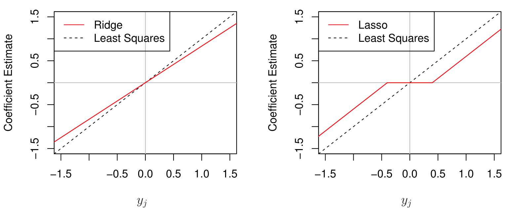
La Figura 13 muestra el error de validación cruzada para PCR en los datos Credit.
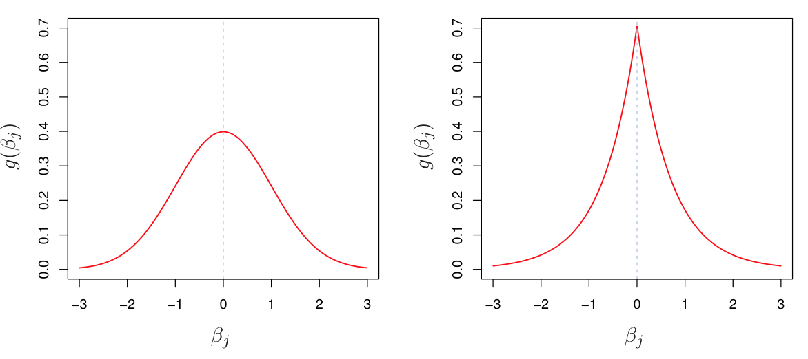
Mínimos Cuadrados Parciales (PLS)
Los mínimos cuadrados parciales (Partial Least Squares, PLS) es una alternativa a PCR que también construye combinaciones lineales de los predictores, pero usando también la respuesta \(Y\) para guiar la construcción de las componentes.
La Figura 14 compara PCR y PLS en datos simulados.
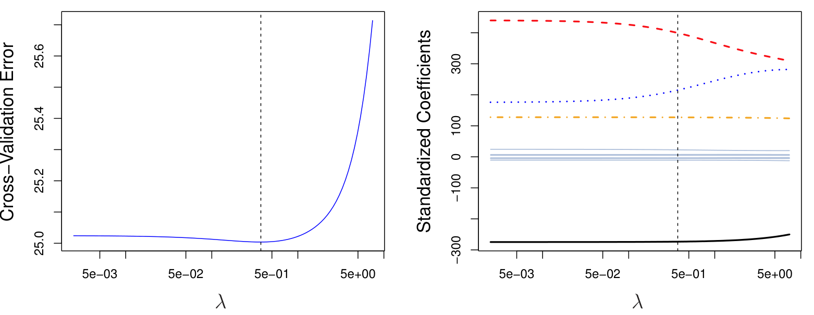
Consideraciones en Altas Dimensiones
Los métodos de este capítulo son particularmente útiles cuando \(p\) es grande o cuando \(p > n\) (más predictores que observaciones).
Datos de Alta Dimensión
Cuando \(p > n\), la regresión por mínimos cuadrados no tiene solución única. La Figura 15 ilustra un ejemplo de datos de alta dimensión.
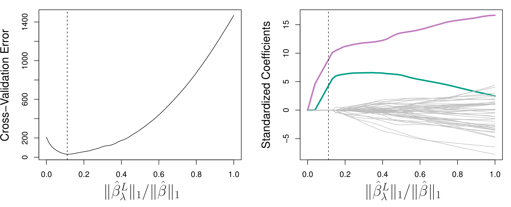
¿Qué Sale Mal en Altas Dimensiones?
En altas dimensiones, la varianza de las predicciones puede ser enorme. La Figura 16 y Figura 17 muestran los problemas que surgen.
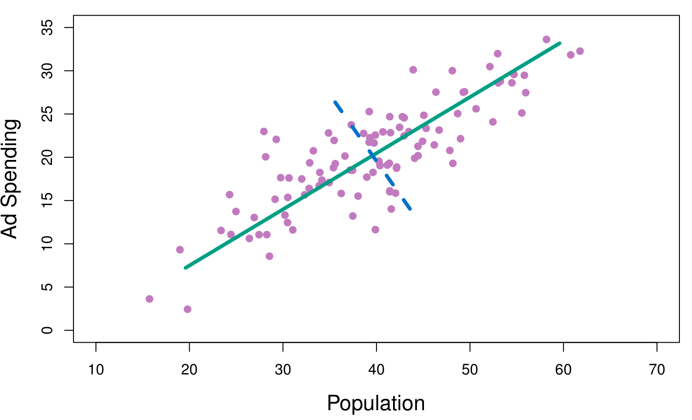
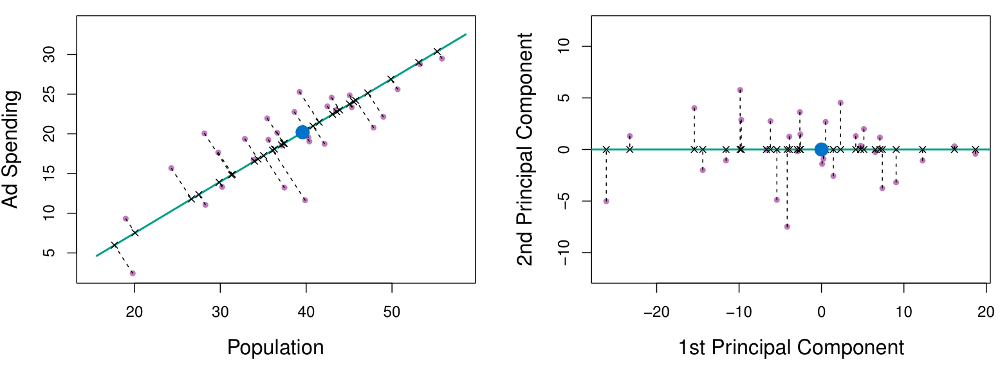
Las Figura 18 y Figura 19 proporcionan más comparaciones de métodos en escenarios de alta dimensión.
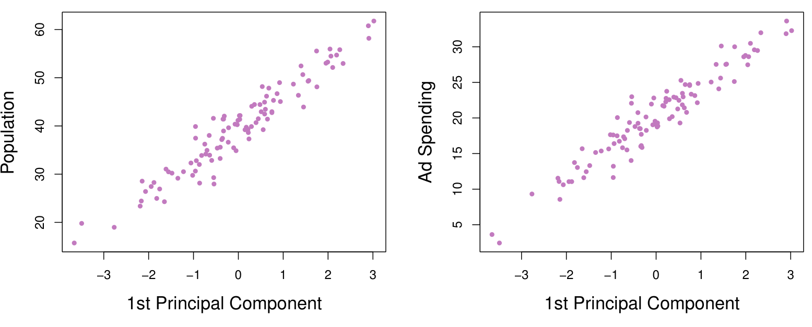
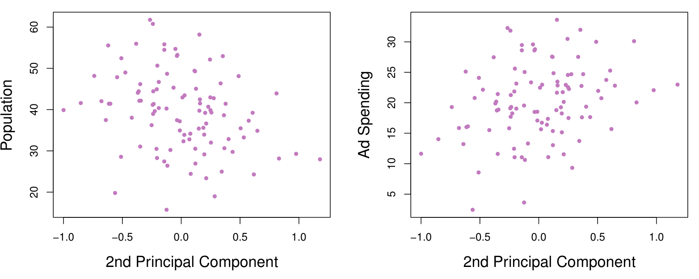
El Rol de la Regularización
En altas dimensiones, la regularización (ridge, lasso) es esencial para obtener modelos estables y predictivos. La Figura 20, Figura 21 y Figura 22 muestran el efecto de la regularización en escenarios de alta dimensión.
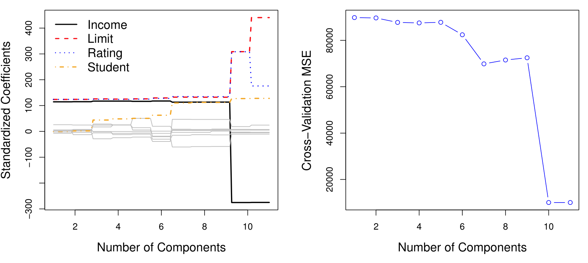
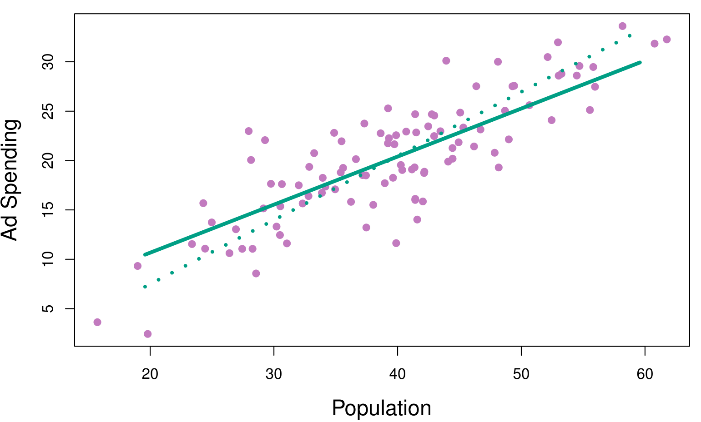
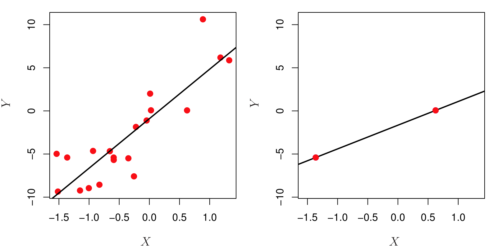
La Figura 23 y Figura 24 presentan más comparaciones entre métodos de regularización y reducción de dimensionalidad.
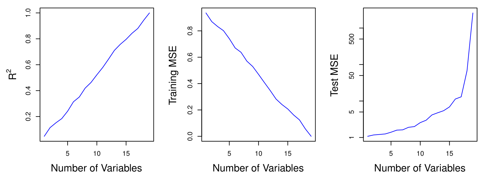
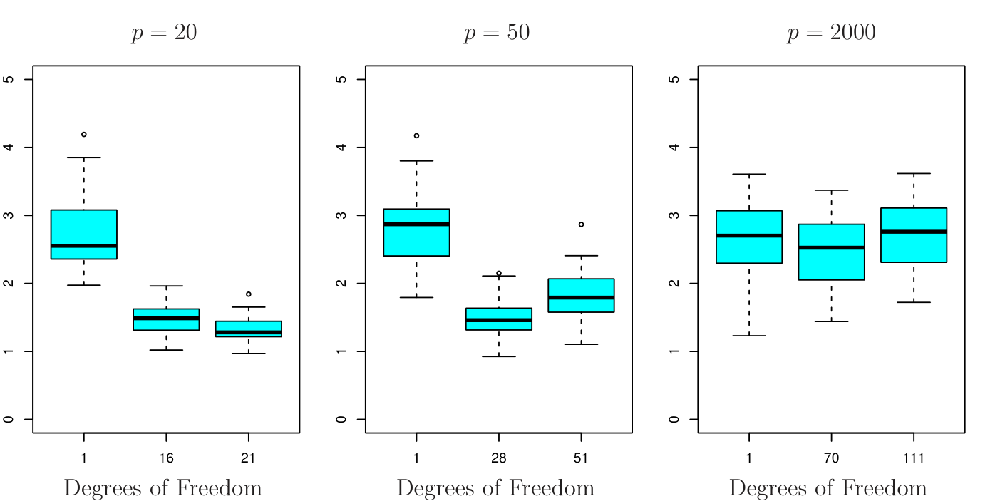
Laboratorio
Los laboratorios con el código completo de este capítulo están disponibles en el sitio oficial del libro: statlearning.com. También puedes acceder a los notebooks en el repositorio oficial de ISLP: ISLP_labs en GitHub.